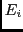
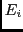
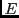
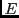

suivant: Bonus, 2 points.
monter: TP : Plus longue
précédent: Question 3. 4 points.
Cherchez  par dichotomie dans le tableau .
Il faut trouver dans l'indice ( est une longueur entre 1 et ) le plus grand tel que
par dichotomie dans le tableau .
Il faut trouver dans l'indice ( est une longueur entre 1 et ) le plus grand tel que  soit inférieure ou égale à .
Or le tableau
soit inférieure ou égale à .
Or le tableau
 est toujours trié par ordre croissant, comme sur l'exemple précédent :
.
Vérifiez que toutes les méthodes rendent les mêmes tableaux , pour des  identiques, et que la seconde méthode avec une recherche dichotomique est
nettement plus rapide pour des tailles de cent mille ou un million d'éléments dans .
est toujours trié par ordre croissant, comme sur l'exemple précédent :
.
Vérifiez que toutes les méthodes rendent les mêmes tableaux , pour des  identiques, et que la seconde méthode avec une recherche dichotomique est
nettement plus rapide pour des tailles de cent mille ou un million d'éléments dans .
Dominique Michelucci
2012-12-06